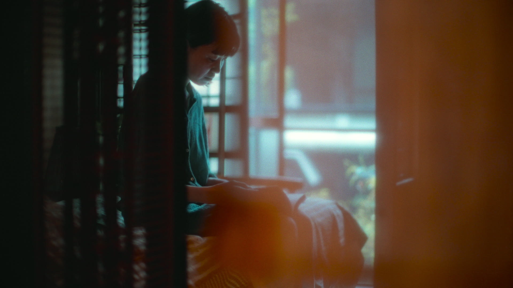
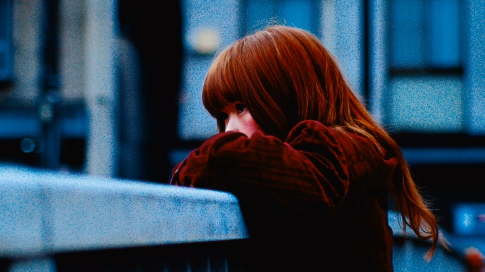
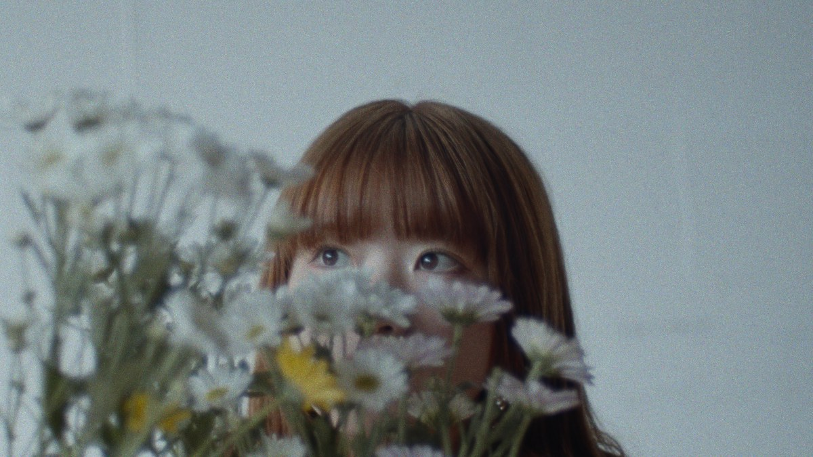
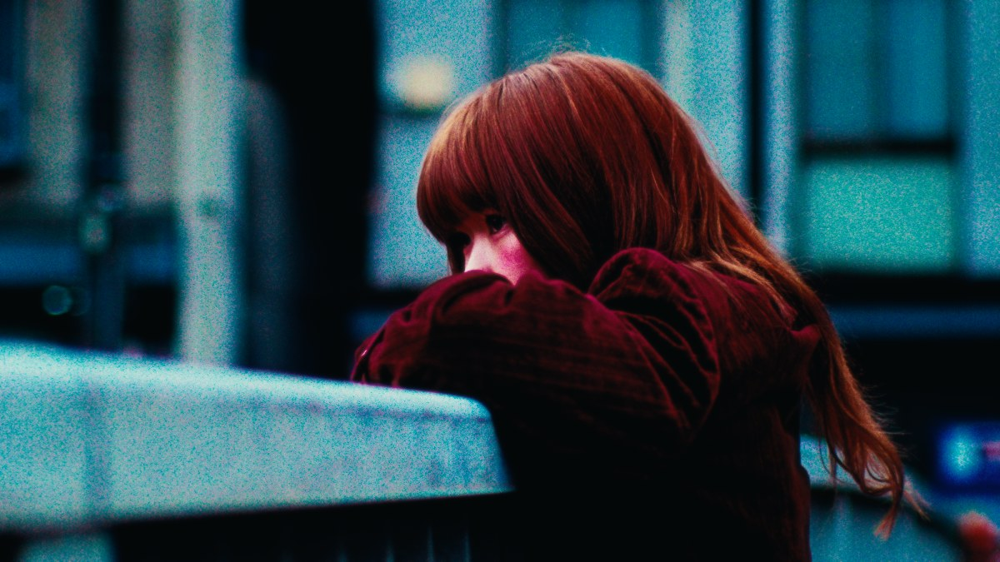
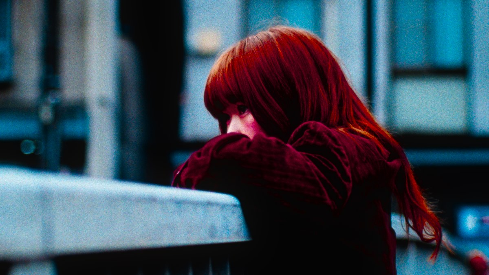
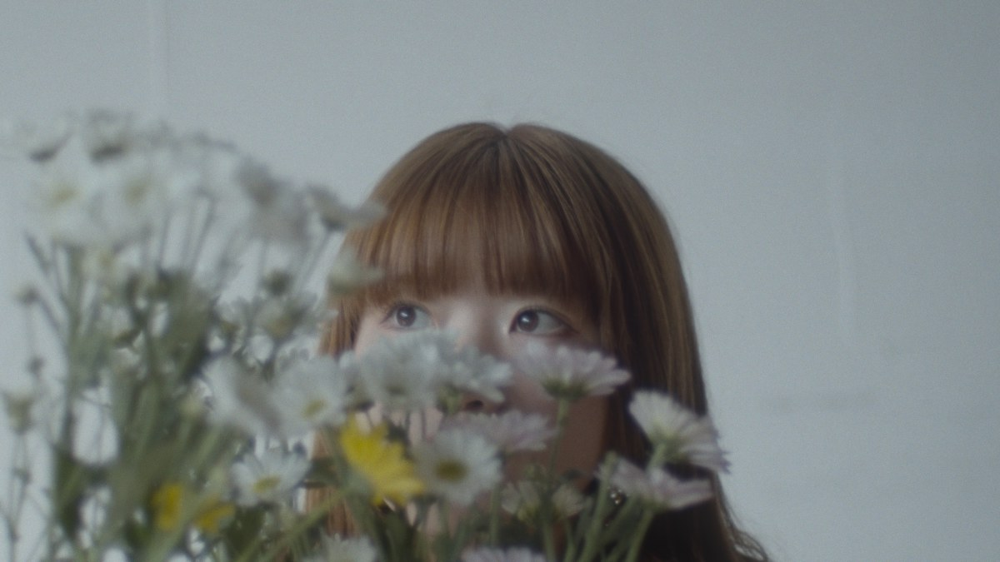

1つのインストーラ、1つのライセンス、機械上の全ホスト。





同じ1フレームを6つのルックで。設定された値はすべて調整できます。
SDI を受けて、ルックを乗せて、SDI で返す。 モニタで承認したものが、言葉ではなくファイルとしてポストに届きます。
入力を露光量に戻し、ネガの特性曲線を通し、プリントに焼き、表示に戻します。 色や粒子を後から足すのではなく、その一連を通した結果として出てきます。
ネガの特性曲線とプリント濃度を、白・中間・黒の3点で校正しています。 Rec.709 を入れて Rec.709 で受け取っても、二重にトーンマッピングされません。
レンズ内散乱、乳剤層内の側方散乱、ベース裏面での反射、色素雲の拡散。 物理が違うので、半径も色の偏りも別々に扱います。
濃度空間で乗算し、σ は濃度の平方根に比例させています。 層ごとに粒子の大きさが違い、ゲージは 65mm から 8mm まで。
MTF のなまり、現像がエッジに残すアキュータンス、層間効果。 倍率色収差、ゲートウィーブ、光線引き。
1つのショットが、あるアプリでグレーディングされ、別のアプリで合成され、 さらに別のアプリで編集されます。KOMA はその全部の後ろにある1つのエンジンなので、 ドアをくぐるたびにルックを作り直す必要がありません。 素材が合わなくなって合成をやり直す、も起きません。
.koma プリセットが全ての値を持ちます。グレーディングで保存し、
合成で開き、編集で当てる。ただのテキストなので、
作品のリポジトリに他のものと一緒に入れられます。
プラグインもアプリも実装は1つで、CPU と GPU をフレーム単位で 突き合わせて検査しています。ホストごとに近似し直していないので、 同じプリセットは同じ絵になります。
銘柄・ルック・カラースペースは、メニューの位置ではなく名前で保存します。 項目を並べ替えても追加してもプリセットは壊れません。 作品の期間ずっと持ち回れるのはそのためです。
バイパスは入力をそのまま返します。素の画で合成を組み立てて、 仕上がったショットにフィルム段を乗せ直せます。 実際のフィルムで起きる順番と同じです。
AJA と Blackmagic のカードで入力も出力も。 出力は入力にロックするので、レートを指定させるのではなく カメラのレートに従います。
CDL / トーンカーブ / HSL カーブがフィルム段の手前に入ります。 ホストで「グレードノード → KOMA」と並べたときと同じ順序なので、 現場で決めたものをポストで組み直せます。
1フレーム。モニタに出るのはレンダリングした絵そのもので、 その後ろでもう一度描いているわけではありません。
フレームでもクリップでも開いて、再生し、コマ送りし、 フル解像度で書き出せます。ルックはチャートではなく素材で判断するもの。
.koma ファイル。ホスト間で持ち運べます。After Effects は現時点では CPU で描画します。 速度は機械と、どの段を有効にしているかで変わります。
無料
全機能が、全ホストで。
¥19,800 / 年
約 US$129。税と為替レートは確定前です。
販売はまだ開始していません。 taki@kotetsu.work までご連絡いただければ、 開始時にお知らせします。